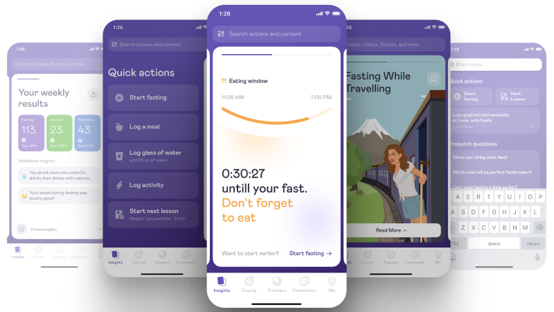

Simple
2020 – 2021, B2C health · intermittent fasting and nutrition tracker

About
After years of B2B, Simple was where I learned to think in B2C — subscription, emotion, retention — under CPO Stas Pyatikop, in a designer–PM pair while the company hunted for scale. There was no client answer to copy; we ran hypotheses from bold prototypes through qual I drove myself: Figma into the research platform, videos and transcripts, then the next iteration with my PM. Ships were proof — personal analytics behind the paywall, a home idiom that won an internal concept review and reached production, a meal-logging flow that tested well but never shipped. I joined a scaling health product already at serious reach; they trusted me on core surfaces.
There is more to tell
On a call I can walk you through:
- What B2C rewiring feels like after B2B — subscription, emotion, no client brief to copy
- Designer–PM pair in a scaling health app — how decisions actually get made
- Learning product thinking from a strong CPO — what transferred to later roles
- Running qual research yourself when nobody hands you a playbook
If your team is shipping consumer health or subscription product at scale, let's talk.
,-. _,---._ __ / \ / ) .-' `./ / \ ( ( ,' `/ /| \ `-" \'\ / | `. , \ \ / | /`. ,'-`----Y | ( ; | ' | ,-. ,-' | / | | ( | | / ) | \ `.___________|/ `--' `--'